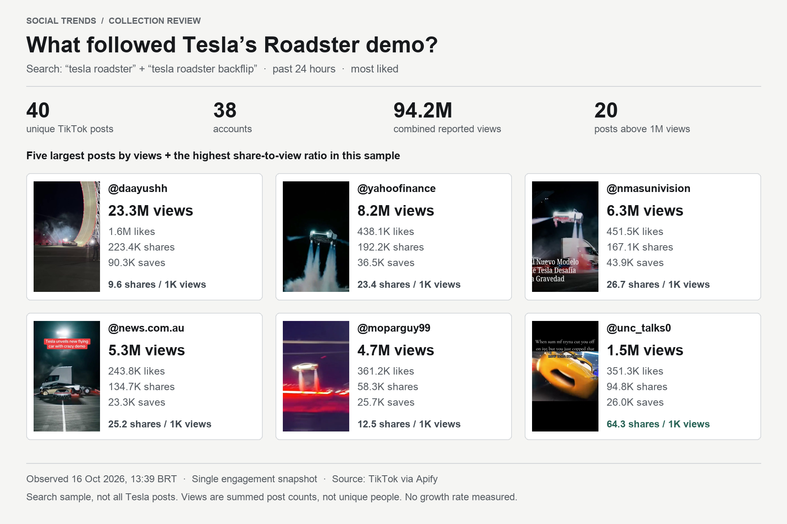

What followed Tesla’s Roadster demo?
We ran two searches through our trend research tool. Here are the posts it returned, the attention they received, and the data behind the collection.
Collected 16 October 2026, 13:39 BRT (16:39 UTC) · TikTok · Saved snapshot
Six selected posts, visually reviewed. Click a post in the image or its preview below to explore the hook, composition and sampled scene progression.

Different metrics surface different references.
The largest post has 23.3M views and 9.6 shares per 1,000 views. Another has 1.5M views and 64.3 shares per 1,000 views. Switch the sort below to explore the difference.
These are observed engagement counts, not a prediction of what will go viral. Summed views are not unique audience reach.
Collected posts
40 postsFilter this saved collection by caption, creator or original search. Open a source to watch the video.
No posts match these filters. Try a different creator or reset the filters.
How this collection was fetched
The request
- Searches
- “tesla roadster”
“tesla roadster backflip” - Publication filter
- Past 24 hours
- Source ranking
- Most liked · 20 results per query
- Result
- 40 unique posts from 38 accounts
- Collection window
- 16 Oct 2026, 16:39:19–16:39:48 UTC
- Collector
- Apify / clockworks TikTok Scraper 0.0.619
What the data tells us
Six selected videos have a separate visual review: the five largest by views plus the highest share-to-view ratio. Timestamped frames were inspected across each clip using the Social Trends reference workflow. Each panel includes visible evidence, a proposed test and review limits.
This is a search-ranked sample, not every post about Tesla. Counts reflect one collection time and may have changed since.
Shares per 1,000 views = shares ÷ views × 1,000. A higher ratio does not establish why a video performed or predict its future performance.
A second collection would be needed to measure changes over time. Captions and previews are source material; they are not independently verified transcripts or claims.
Exports include post IDs, captions, source URLs, publication and observation timestamps, metrics and original queries. CSV preserves the fetched caption text; JSON adds preview paths and video duration. Internal credentials and collection receipts are excluded. Download the six visual analyses (JSON).